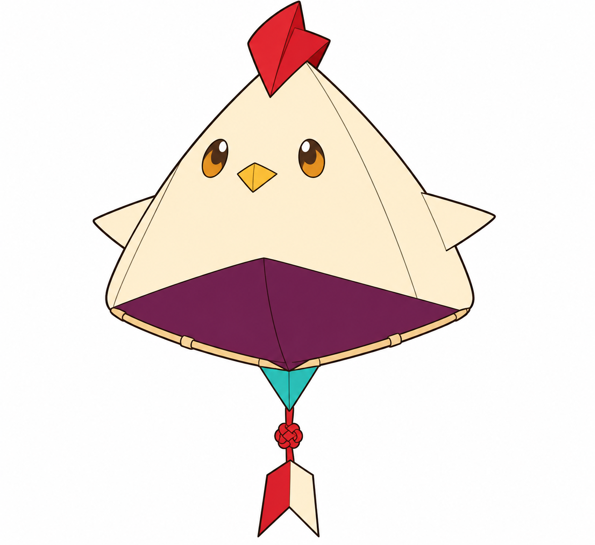
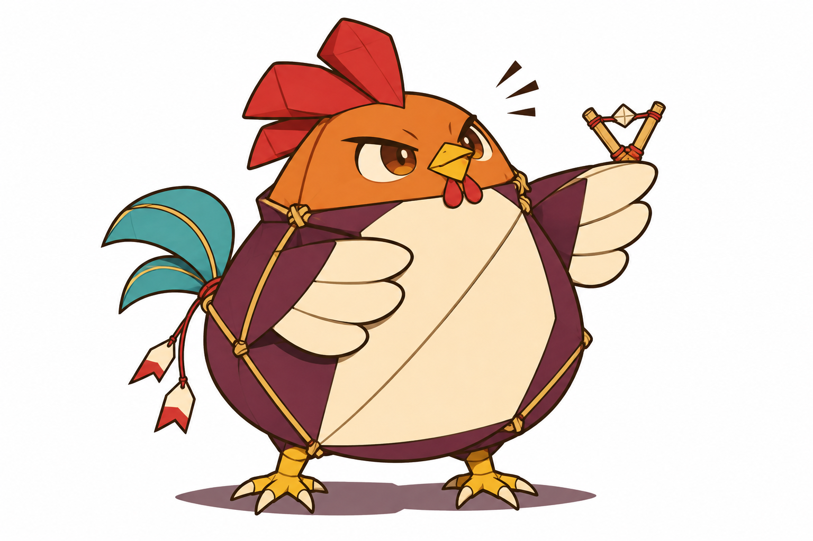
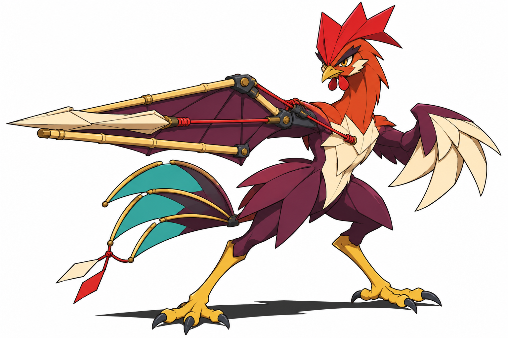
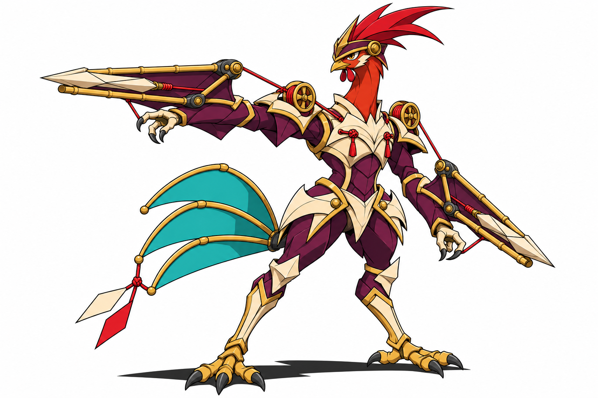

Pivico · Bebê — Aprovado

Aprende a sentir o puxão da própria linha.
Ação: Perceber a tensão
Limitação proposta: Depende de correntes suaves; ainda não se ancora.
BriefQuatro concepts aprovados visualmente. Nomes e mecânicas continuam propostos. Sem integração.
Pesquisa e decisões · Fontes · Comparativo
Aprende a sentir o puxão da própria linha.
Ação: Perceber a tensão
Limitação proposta: Depende de correntes suaves; ainda não se ancora.
Brief
Troca o susto pela curiosidade; erra e insiste.
Ação: Praticar a mira
Limitação proposta: Mecanismo pequeno e instável; precisa parar para mirar.
Brief
O impulso de desafiar vira técnica de duelo.
Ação: Interceptar à distância
Limitação proposta: O disparo exige apoio e recuperação da tensão.
Brief
Aprende a escolher o momento do tiro e coordenar a pressão.
Ação: Controlar duas linhas de tiro
Limitação proposta: Rearmar os dois mecanismos o deixa momentaneamente exposto.
Brief